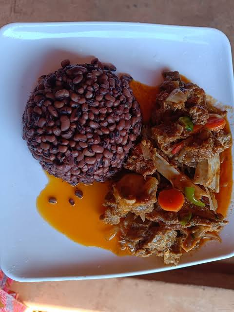

Le mot benga fait principalement référence au plat traditionnel à base de haricots au Burkina Faso
Communément appelé benga ou sôssô, c'est un mets rès populaire à base de
haricots (niébé) souvent cuisinés avec du riz et de l'huile, très apprécié
pour sa richesse en protéines et son accessibilité.